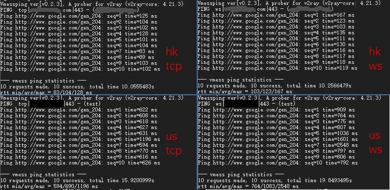

TLS
Table of Contents
从 v1.19 起引入了 TLS，TLS 中文译名是传输层安全
基础
注册域名
如果已经注册有域名了可以跳过
TLS 需要一个域名，域名有免费的和有付费的，如果不舍得为一个域名每年花点钱，用个免费域名也可以，但总体来说付费的会优于免费的
为了方便，在本文中忽略如何注册购买域名了
注册好域名之后务必记得添加一个 A 记录 指向你的 VPS!
以下假设注册的域名为 mydomain.me，请将之替换成自己的域名
生成证书
TLS 是证书认证机制，所以使用 TLS 需要证书，证书也有免费付费的
这里使用免费证书，证书认证机构为 Let's Encrypt
证书的生成有许多方法，这里使用的是比较简单的方法：使用 acme.sh 脚本生成
本部分说明部分内容参考于acme.sh README
证书有两种，一种是 ECC 证书（内置公钥是 ECDSA 公钥），一种是 RSA 证书（内置 RSA 公钥）
简单来说，同等长度 ECC 比 RSA 更安全,也就是说在具有同样安全性的情况下，ECC 的密钥长度比 RSA 短得多（加密解密会更快） 但问题是 ECC 的兼容性会差一些，Android 4.x 以下和 Windows XP 不支持。只要设备不是非常老的老古董，建议使用 ECC 证书
acme
安装
执行以下命令，acme.sh 会安装到 ~/.acme.sh 目录下
$ curl https://get.acme.sh | sh
% Total % Received % Xferd Average Speed Time Time Time Current
Dload Upload Total Spent Left Speed
100 671 100 671 0 0 680 0 --:--:-- --:--:-- --:--:-- 679
% Total % Received % Xferd Average Speed Time Time Time Current
Dload Upload Total Spent Left Speed
100 112k 100 112k 0 0 690k 0 --:--:-- --:--:-- --:--:-- 693k
[Fri 30 Dec 01:03:32 GMT 2016] Installing from online archive.
[Fri 30 Dec 01:03:32 GMT 2016] Downloading https://github.com/Neilpang/acme.sh/archive/master.tar.gz
[Fri 30 Dec 01:03:33 GMT 2016] Extracting master.tar.gz
[Fri 30 Dec 01:03:33 GMT 2016] Installing to /home/user/.acme.sh
[Fri 30 Dec 01:03:33 GMT 2016] Installed to /home/user/.acme.sh/acme.sh
[Fri 30 Dec 01:03:33 GMT 2016] Installing alias to '/home/user/.profile'
[Fri 30 Dec 01:03:33 GMT 2016] OK, Close and reopen your terminal to start using acme.sh
[Fri 30 Dec 01:03:33 GMT 2016] Installing cron job
no crontab for user
no crontab for user
[Fri 30 Dec 01:03:33 GMT 2016] Good, bash is found, so change the shebang to use bash as preferred.
[Fri 30 Dec 01:03:33 GMT 2016] OK
[Fri 30 Dec 01:03:33 GMT 2016] Install success!
安装成功后执行 source ~/.bashrc 以确保脚本所设置的命令别名生效
如果安装报错，那么可能是因为系统缺少 acme.sh 所需要的依赖项 ，acme.sh 的依赖项主要是 socat ，通过以下命令来安装这些依赖项，然后重新安装一遍 acme.sh:
$ sudo apt-get install openssl cron socat curl
生成证书
执行以下命令生成证书：
$ ~/.acme.sh/acme.sh --issue -d mydomain.me --standalone --keylength ec-256 --force [Fri Dec 30 08:59:12 HKT 2016] Standalone mode. [Fri Dec 30 08:59:12 HKT 2016] Single domain='mydomain.me' [Fri Dec 30 08:59:12 HKT 2016] Getting domain auth token for each domain [Fri Dec 30 08:59:12 HKT 2016] Getting webroot for domain='mydomain.me' [Fri Dec 30 08:59:12 HKT 2016] _w='no' [Fri Dec 30 08:59:12 HKT 2016] Getting new-authz for domain='mydomain.me' [Fri Dec 30 08:59:14 HKT 2016] The new-authz request is ok. [Fri Dec 30 08:59:14 HKT 2016] mydomain.me is already verified, skip. [Fri Dec 30 08:59:14 HKT 2016] mydomain.me is already verified, skip http-01. [Fri Dec 30 08:59:14 HKT 2016] mydomain.me is already verified, skip http-01. [Fri Dec 30 08:59:14 HKT 2016] Verify finished, start to sign. [Fri Dec 30 08:59:16 HKT 2016] Cert success. -----BEGIN CERTIFICATE----- MIIEMTCCAxmgAwIBAgISA1+gJF5zwUDjNX/6Xzz5fo3lMA0GCSqGSIb3DQEBCwUA MEoxCzAJBgNVBAYTAlVTMRYwFAYDVQQKEw1MZXQncyBFbmNyeXB0MSMwIQYDVQQD ExpMZXQncyBFbmNyeXB0IEF1dGhvcml0eSBYMzAeFw0xNjEyMjkyMzU5MDBaFw0x NzAzMjkyMzU5MDBaMBcxFTATBgNVBAMTDHdlYWtzYW5kLmNvbTBZMBMGByqGSM49 **************************************************************** 4p40tm0aMB837XQ9jeAXvXulhVH/7/wWZ8/vkUUvuHSCYHagENiq/3DYj4a85Iw9 +6u1r7atYHJ2VwqSamiyTGDQuhc5wdXIQxY/YQQqkAmn5tLsTZnnOavc4plANT40 zweiG8vcIvMVnnkM0TSz8G1yzv1nOkruN3ozQkLMu6YS7lk/ENBN7DBtYVSmJeU2 VAXE+zgRaP7JFOqK6DrOwhyE2LSgae83Wq/XgXxjfIo1Zmn2UmlE0sbdNKBasnf9 gPUI45eltrjcv8FCSTOUcT7PWCa3 -----END CERTIFICATE----- [Fri Dec 30 08:59:16 HKT 2016] Your cert is in /root/.acme.sh/mydomain.me_ecc/mydomain.me.cer [Fri Dec 30 08:59:16 HKT 2016] Your cert key is in /root/.acme.sh/mydomain.me_ecc/mydomain.me.key [Fri Dec 30 08:59:16 HKT 2016] The intermediate CA cert is in /root/.acme.sh/mydomain.me_ecc/ca.cer [Fri Dec 30 08:59:16 HKT 2016] And the full chain certs is there: /root/.acme.sh/mydomain.me_ecc/fullchain.cer
–keylength 表示密钥长度，后面的值可以是 ec-256 、ec-384、2048、3072、4096、8192
带有 ec 表示生成的是 ECC 证书，没有则是 RSA 证书 在安全性上 256 位的 ECC 证书等同于 3072 位的 RSA 证书
更新证书
由于 Let's Encrypt 的证书有效期只有 3 个月，因此需要 90 天至少要更新一次证书
acme.sh 脚本会每 60 天自动更新证书。也可以手动更新：
$ ~/.acme.sh/acme.sh --renew -d mydomain.com --force --ecc
由于本例中将证书生成到 /etc/v2ray/ 文件夹，更新证书之后还得把新证书生成到 /etc/v2ray
安装证书和密钥
将证书和密钥安装到 /etc/v2ray 中：
$ sudo ~/.acme.sh/acme.sh --installcert -d mydomain.me --ecc \ --fullchain-file /etc/v2ray/v2ray.crt \ --key-file /etc/v2ray/v2ray.key
注意：无论什么情况，密钥(即上面的 v2ray.key)都不能泄漏
如果不幸泄漏了密钥，可以使用 acme.sh 将原证书吊销，再生成新的证书 吊销方法请自行参考 acme.sh 的手册
配置
服务器
{
"inbounds": [
{
"port": 443, // 建议使用 443 端口
"protocol": "vmess",
"settings": {
"clients": [
{
"id": "23ad6b10-8d1a-40f7-8ad0-e3e35cd38297",
"alterId": 64
}
]
},
"streamSettings": {
"network": "tcp",
"security": "tls", // security 要设置为 tls 才会启用 TLS
"tlsSettings": {
"certificates": [
{
"certificateFile": "/etc/v2ray/v2ray.crt", // 证书文件
"keyFile": "/etc/v2ray/v2ray.key" // 密钥文件
}
]
}
}
}
],
"outbounds": [
{
"protocol": "freedom",
"settings": {}
}
]
}
客户端
{
"inbounds": [
{
"port": 1080,
"protocol": "socks",
"sniffing": {
"enabled": true,
"destOverride": ["http", "tls"]
},
"settings": {
"auth": "noauth"
}
}
],
"outbounds": [
{
"protocol": "vmess",
"settings": {
"vnext": [
{
"address": "mydomain.me", // tls 需要域名，所以这里应该填自己的域名
"port": 443,
"users": [
{
"id": "23ad6b10-8d1a-40f7-8ad0-e3e35cd38297",
"alterId": 64
}
]
}
]
},
"streamSettings": {
"network": "tcp",
"security": "tls" // 客户端的 security 也要设置为 tls
}
}
]
}
V2Ray 的 TLS 不是伪装或混淆，这是完整、真正的 TLS。因此才需要域名和证书 后文提到的 WS(WebSocket) 也不是伪装
TCP + TLS + Web
新手建议使用 TLS 分流器
背景
目前 Vmess + WebSocket + TLS （以下简称 wss）方式，因其特征如同 HTTPS 流量 可以隐藏 V2Ray 路径，主动侦测会得到正常 HTTP 网站响应，具有良好的伪装能力，目前被广泛用于反审查
但是如此强大的伪装能力，需要付出严重的性能代价：TLS 1.3 握手需要消耗 1-rtt，WS 握手也需要消耗 1-rtt，增大了握手延迟
V2Ray 增加了 mux 以减少握手的发生，然而实际使用中 mux 体验并不好，很多用户选择关闭
最近兴起了一个新的反审查工具 Trojan，这个工具将一个类似 Socks 的协议直接通过 TLS 传输，并将认证失败的流量交由 Web 服务器处理。降低 WS 延迟的同时，提供与 wss 方式一样的伪装能力
但是该工具较为年轻，没有路由功能，各平台图形化客户端也不完善
因此，这里尝试用 V2Ray 实现类似功能，即 Vmess + TCP + TLS 并网站伪装，省下 WS 的握手延迟
原理
HaProxy 监听 443 端口，处理 TLS 之后，将 HTTP 流量交由 Web 服务器处理，非 HTTP 流量交由 V2Ray 按 Vmess 处理
实现
本次方案使用 HaProxy，Nginx（Web 服务器的使用不是本教程的重点），V2Ray
安装 HaProxy
apt install haproxy
为了较好的支持 TLS1.3，HaProxy 版本应大于 1.8.15，OpenSSl 版本应大于 1.1.1 如果使用的发行版仓库自带的版本较低，需要自行编译安装
安装 Web 服务器，Nginx
apt install nginx
- 安装 V2Ray，可以使用官方脚本官方脚本
修改 V2Ray 配置文件，以 Vmess + TCP 方式 监听 40001 端口
{ "inbounds": [ { "protocol": "vmess", "listen": "127.0.0.1", "port": 40001, "settings": { "clients": [ { "id": "f2435e5c-9ad9-4367-836a-8341117d0a5f" } ] }, "streamSettings": { "network": "tcp" } } ], "outbounds": [ { "protocol": "freedom" } ] }修改 Web 服务器配置文件，部署 HTTP 服务于 8080 端口：
# Nginx 在 http{} 里面添加 server { listen 8080; server_name example.com; root /var/www/html; }
/var/www/html 是静态网站目录 实际服务请根据需要部署，也可以用 httpd 之类的替代 似乎很多 Trojan 教程直接监听 80 端口，其实很多 HTTPS 网站 80 端口通常是重定向到 HTTPS
修改 HaProxy 配置文件：
global log /dev/log local0 log /dev/log local1 notice chroot /var/lib/haproxy stats socket /run/haproxy/admin.sock mode 660 level admin expose-fd listeners stats timeout 30s user haproxy group haproxy daemon ca-base /etc/ssl/certs crt-base /etc/ssl/private # 仅使用支持 FS 和 AEAD 的加密套件 ssl-default-bind-ciphers ECDHE-ECDSA-AES128-GCM-SHA256:ECDHE-RSA-AES128-GCM-SHA256:ECDHE-ECDSA-AES256-GCM-SHA384:ECDHE-RSA-AES256-GCM-SHA384:ECDHE-ECDSA-CHACHA20-POLY1305:ECDHE-RSA-CHACHA20-POLY1305:DHE-RSA-AES128-GCM-SHA256:DHE-RSA-AES256-GCM-SHA384 ssl-default-bind-ciphersuites TLS_AES_128_GCM_SHA256:TLS_AES_256_GCM_SHA384:TLS_CHACHA20_POLY1305_SHA256 # 禁用 TLS 1.2 之前的 TLS ssl-default-bind-options no-sslv3 no-tlsv10 no-tlsv11 tune.ssl.default-dh-param 2048 defaults log global # 我们需要使用 tcp 模式 mode tcp option dontlognull timeout connect 5s # 空闲连接等待时间，这里使用与 V2Ray 默认 connIdle 一致的 300s timeout client 300s timeout server 300s frontend tls-in # 监听 443 tls，tfo 根据自身情况决定是否开启，证书放置于 /etc/ssl/private/example.com.pem bind *:443 tfo ssl crt /etc/ssl/private/example.com.pem tcp-request inspect-delay 5s tcp-request content accept if HTTP # 将 HTTP 流量发给 web 后端 use_backend web if HTTP # 将其他流量发给 vmess 后端 default_backend vmess backend web server server1 127.0.0.1:8080 backend vmess server server1 127.0.0.1:40001
与 Nginx 不同，HaProxy 的证书和密钥放于同一个文件 可以使用命令 cat example.com.crt example.com.key > example.com.pem 合成证书
重启服务
systemctl restart haproxy systemctl restart nginx systemctl restart v2ray
客户端连接 example.com:443 vmess tls 即可
{ "inbounds": [ { "port": 1080, "listen": "127.0.0.1", "protocol": "socks" } ], "outbounds": [ { "protocol": "vmess", "settings": { "vnext": [ { "address": "example.com", "port": 443, "users": [ { "id": "f2435e5c-9ad9-4367-836a-8341117d0a5f", "security": "none" } ] } ] }, "streamSettings": { "network": "tcp", "security": "tls" } } ] }
效果

测试工具为 vmessping ，可见 Vmess + TCP + TLS（左）延迟低于 Vmess + WSS（右）
讨论
HaProxy，V2Ray，Nginx 都是支持 Domain Socket 的，流量较大或数据包较多时使用 ds 可以提高性能
这里不做展开，可以参考这篇文章 https://gist.github.com/liberal-boy/b2d5597285b4202b6d607faaa1078d27
- 可以使用这个工具 开启 OCSP Stapling 减少客户端验证证书的时间
- 该方法的隐蔽性是否比 wss 低？
- 中间人看来，该方法在建立 TLS 连接后，比 wss 少一次握手，即 TLS 建立后直接发送请求并获得响应，该行为是符合正常的 HTTPS 请求的
- 主动探测时：
- 如 TLS 建立后发送 HTTP 请求，则被发给 Web 服务器按正常 HTTP 请求处理
- 如发送非 HTTP 请求，会被发给 V2Ray 处理，如 Vmess 认证失败，连接将被关闭，向 HTTPS 服务器发送非 HTTPS 请求，连接被关闭是正常的行为。
TCP + TLS 分流器
这是 TCP + TLS + Web 的简易实现 不需要处理 HaProxy 和 OpenSSL 的版本问题，也不需要自己申请证书，也不需要额外安装 Web 服务器
实现
- 安装 V2Ray，可以使用官方脚本官方脚本
- 安装 TLS 分流器 ，见 安装说明
修改 TLS 分流器配置文件，位于 /etc/tls-shunt-proxy/config.yaml
listen: 0.0.0.0:443 vhosts: # 将 example.com 改为你的域名 - name: example.com tlsoffloading: true managedcert: true alpn: h2,http/1.1 # 如果不需要兼容 tls12, 可改为 tls13 protocols: tls12,tls13 http: handler: fileServer # /var/www/html 是静态网站目录 args: /var/www/html default: handler: proxyPass args: 127.0.0.1:40001
修改服务器 V2Ray 配置文件 /etc/v2ray/config.json ，同 TCP + TLS + Web 方式
{ "inbounds": [ { "protocol": "vmess", "listen": "127.0.0.1", "port": 40001, "settings": { "clients": [ { "id": "f2435e5c-9ad9-4367-836a-8341117d0a5f" } ] }, "streamSettings": { "network": "tcp" } } ], "outbounds": [ { "protocol": "freedom" } ] }重启服务
systemctl restart tls-shunt-proxy systemctl restart v2ray
客户端连接 example.com:443 vmess tls 即可
{ "inbounds": [ { "port": 1080, "listen": "127.0.0.1", "protocol": "socks" } ], "outbounds": [ { "protocol": "vmess", "settings": { "vnext": [ { "address": "example.com", "port": 443, "users": [ { "id": "f2435e5c-9ad9-4367-836a-8341117d0a5f", "security": "none" } ] } ] }, "streamSettings": { "network": "tcp", "security": "tls" } } ] }
Domain Socket
相比 TCP，Domain Socket (以下简称 DS) 更为高效
根据测试反馈，速度超过 50Mbps 时，通常会有较明显的性能差距
DS 仅限分流器与服务端 V2Ray 连接，客户端连接服务器仍然使用 TCP, 即：
TLS over TCP DS 客户端 V2Ray --------------- TLS 分流器 -------- 服务端 V2Ray
修改分流器配置文件 /etc/tls-shunt-proxy/config.yaml
listen: 0.0.0.0:443 vhosts: # 将 example.com 改为你的域名 - name: example.com tlsoffloading: true managedcert: true alpn: h2,http/1.1 # 如果不需要兼容 tls12, 可改为 tls13 protocols: tls12,tls13 http: handler: fileServer # /var/www/html 是静态网站目录 args: /var/www/html default: handler: proxyPass args: unix:@v2ray.sock
修改服务器 V2Ray 配置文件 /etc/v2ray/config.json
{ "inbounds": [ { "protocol": "vmess", "listen": "127.0.0.1", "port": 40001, "settings": { "clients": [ { "id": "f2435e5c-9ad9-4367-836a-8341117d0a5f" } ] }, "streamSettings": { "network": "ds", "dsSettings": { "path": "@v2ray.sock", "abstract": true } } } ], "outbounds": [ { "protocol": "freedom" } ] }重启服务
systemctl daemon-reload systemctl restart v2ray systemctl restart tls-shunt-proxy
其他
TLS 分流器还可以实现 vmess + TLS + Web 和 trojan 共享端口 具体配置参数请参阅项目 https://github.com/liberal-boy/tls-shunt-proxy/blob/master/README.md
| Next: Websocket | Previous：代理转发 | Home：传输 |